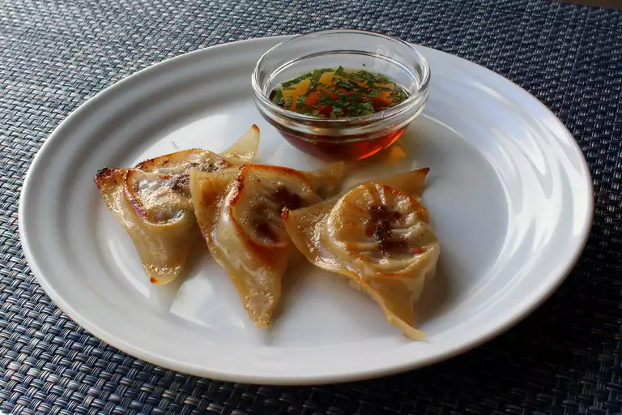

Spring Lamb Pan-Fried Dumplings

Description
This appetizer features pan-fried wontons stuffed with lamb and green
peas. The mint in the dipping sauce perfectly complements the fatty, gamey
flavor of the lamb. If you don't love lamb, this is really just a
technique-you can these with any kind of meat and vegetables you like.
Ingredients
For the Filling:
- 1 pound ground lamb
- 3 cloves garlic, minced
- 2 tablespoons thinly sliced green onions
- 2 tablespoons finely diced Fresno chile pepper
- 1/4 cup green peas, or to taste
- 1 1/2 teaspoon kosher salt, or to taste
- 1/2 teaspoon freshly ground black pepper
- 1 pinch cayenne pepper
- 1/2 teaspoon ground cumin
For the Dipping Sauce:
- 3/4 cup seasoned rice vinegar
- 2 tablespoons soy sauce
- 2 tablespoons finely sliced fresh mint, or to taste
For the Dumplings:
- 1 egg, beaten
- 1 teaspoon water
- 36 wonton wrappers
- 2 tablespoons butter, or as needed
Directions
-
Combine lamb, green onions, chile peppers, cayenne, and cumin in a bowl.
Mix with 2 forks, starting on the surface of the mixture, until
ingredients are evenly combined. wrap in plastic and chill for 3 hours,
or up to overnight.
-
Mix rice vinegar, soy sauce, and mint together in a bowl for dipping
sauce. refrigirate until needed.
-
Combine beaten egg and water in a small bowl. Brush the edges of a
wonton wrapper with some of the egg wash. Drop 2 to 3 teaspoons of
filling in the center. Fold over and press edges together while
squeezing out any air bubbles. Continue with remaining wrappers and
filling. Let rest for about 10 minutes.
-
Heat butter in a pan over medium heat. Fry batches of dumplings in a hot
butter until meat is no longer pink and dumplings are golden brown,
about 3 miutes per side. Serve with dipping sauce.
Nutrition Facts
(per serving)
346 Calories
16g Fat
30g Carbs
20g Protein